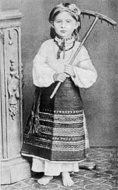
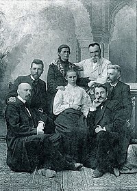
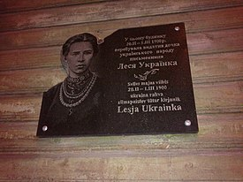
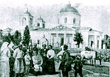
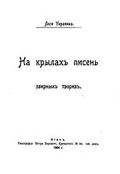

Публічні лекції:
століття» (2014) Частина І,
Частина ІІ, з курсу лекцій Культурного проєкту «Історія літератури в авторах і текстах»,
читає Оксана Забужко;
переосмислені» Мистецького арсеналу, читає Віра Агеєва;
читає Є. Стасіневич.
Ле́ся Украї́нка (справжнє ім'я Лари́са Петрі́вна Ко́сач-Кві́тка
українська письменниця, перекладачка, культурна діячка.
Співзасновниця літературного гуртка «Плеяда».
В сучасній українській традиції входить до переліку
найвідоміших жінок давньої та сучасної України
Писала в жанрах поезії, лірики, епосу, драми, прози, публіцистики.
Також працювала в ділянці фольклористики (220 народних мелодій записано з її голосу)
і брала активну участь в українському національному та жіночому русі.
Мати, Ольга Петрівна Драгоманова-Косач — дворянка за походженням, письменниця, яка творила під псевдонімом Олена Пчілка (її поезію й
оповідання для дітей українською мовою добре знали в Україні),була активною учасницею жіночого руху, видавала альманах «Перший вінок».
Батько, Петро Антонович Косач — дворянин, високоосвічений поміщик, який дуже любив літературу і живопис, дійсний статський радник,
повітовий маршалок.
Дитячі роки пройшли на Волині: у Новограді-Волинському (1871 — весна 1879), Луцьку (весна 1879 — травень 1882), у селі Колодяжне (з травня 1882),
що під Ковелем. У будинку Косачів часто збиралися письменники, художники і музиканти, влаштовувалися вечори і домашні концерти. Дядько Лесі
(так її називали у сім'ї, і це домашнє ім'я стало літературним псевдонімом) — Михайло Драгоманов, був відомим ученим, громадським діячем, який
перед еміграцією до Франції й Болгарії співпрацював із Іваном Франком. Йому належить одна з провідних ролей у формуванні племінниці згідно зі
своїми соціалістичними переконаннями, ідеалами служіння батьківщині, які вона переросла, і допомагав їй як літературний критик і фольклорист.
Отже, Леся Українка мала винятково сприятливі обставини для шліфування вродженого мистецького хисту.
Ле́ся Украї́нка | |
| Ім'я при народженні | Лариса Петрівна Косач |
| Псевдо Народилася | Леся Украинка |
| Народилася | 25 лютого 1871 Новоград-Волинський, Україна |
| Померла | 19 липня (1 серпня) 1913 Сурамі, Тіфліська губернія ·Туберкульоз кісток та суглобів |
| Поховання | Байкове кладовище |
| Громадянство | Російська імперія |
| Національність | Українка |
| Діяльність | поетеса, драматург, публіцистка прозаїк |
| Сфера роботи | поезія |
| Роки активності | українська, російська, французька |
| Жанр | драматична поема, вірш |
| Рід | Косачі |
| Батько | Косач Петро Антонович |
| Мати | Олена Пчілка |
| Брати, сестри | Косач-Шимановська Оксана Петрівна, Косач- Борисова Ізидора Петрівна, Косач-Кривинюк Ольга Петрівна, Косач Михайло Петрович і Косач Микола Петрович |
| У шлюбі з | Квітка Климент Васильович |
На десятий день після народження 23 лютого (7 березня) 1871 року немовля охрестили в Новоград-Волинській Соборній Преображенській церкві,
хрещеними батьками стали полковник Степан Васильковський та рідна бабуся дворянка Єлизавета Драгоманова.
Леся Українка та її старший брат Михайло, яких упродовж життя єднає тривала сердечна дружба, і до певного моменту в сім'ї називають спільним
ім'ям — Мишелосіє, навчалися у приватних учителів. Рано (у 4 роки). Леся навчилася читати. У січні 1876 року О. П. Косач з дітьми Михайлом і
Ларисою приїхали до Києва, щоб попрощатися з дядьком М. П. Драгомановим перед його вимушеною еміграцією.
Пригадую, … я привезла своїх старших дітей Михася й Лесю до Києва;
жили вони якийсь час у Михайла, щоб скількимога ближче спізнатися з дядьком і його родиною
Влітку того ж року О. П. Косач разом з Лесею та Михайлом відпочивають в селі Жабориці. Тут Леся вперше почула розповіді матері про Мавку.
…Видко було, що перебування в Жабориці зробило на Лесю дуже велике враження і дуже їй сподобалося: вона, бувало, раз у раз
із втіхою згадує, що те або те чула чи бачила в Жабориці…
Жаборицькі пісні, казки, різні повір'я, звичаї, купальські, жнив'яні і т. д. Леся добре пам'ятала і часто згадувала…
У шість років Леся почала вчитися вишивати.
Леся зосереджена і дуже вражлива. Багато часу присвячує вишиванню, могла навіть вишити батькові сорочку
26 травня (7 червня) 1877 року народилась сестра Оля, що стане їй доброю подругою. Згодом вона зазначить, що в Лесі:
«такі самі риси обличчя, барва очей і волосся, як у батька, так само середній зріст, така ж постать, така сама тендітність», «однаково були лагідні
та добрі безмежно», «надзвичайно стримані, терплячі та витривалі, з виключною силою волі», «однаково делікатні у відносинах з людьми», «для
любих людей чи справ могли поступитися багато чим, могли бути дуже поблажливими, але я не можу уявити тої людини, тої справи, взагалі тої сили,
що могла б примусити, батька чи Лесю однаково, зробити щось, що вони вважали за непорядне, нечесне. Щоб же зробити таке для власної вигоди
чи користі, чи безпечності, то про те не може бути й мови».
7 (19) листопада того ж року наказом міністерства внутрішніх справ П. А. Косача перевели на роботу до Луцька.
…Батька нашого переведено з обжитого місця, щоб покарати за його «українофільство» та за побачення, під час подорожі до Парижа на виставку
1878 року, з емігрантом, батьковим другом, а материним братом Михайлом Петровичем Драгомановим
Навесні 1879 р. Петро Антонович перевозить до Луцька всю родину. У березні цього ж року заарештовано Лесину тітку Олену Антонівну Косач
за участь у замаху на шефа жандармів Дрентельна; пізніше її вислано в Олонецьку губернію, а 1881 р. заслано до Сибіру на 5 років (м. Ялуторовськ
Тюменської обл., а потім у м. Тюмень). Дізнавшись про це, Леся, вражена звісткою, в кінці 1879 або на початку 1880 року написала свою
першу поезію — «Надія».
Влітку 1880 р. Олександра Антонівна Косач-Шимановська, тітка Лесі, з двома синами переїздить до Луцька, мешкає в родині Косачів. Причиною переїзду став
арешт і заслання до Сибіру її чоловіка Бориса Шимановського. «Тітка Саша» — перша Лесина вчителька музики. До неї Леся зберігала все життя почуття великої вдячності.
6(18) січня 1881 р. під час святкування Водохреща Леся дуже застудилася, що надалі призвело до тяжкої хвороби.
Цього ж року О. П. Косач повезла Михайла, Лесю, Ольгу до Києва для навчання під керівництвом приватних вчителів. Михайло й Леся почали вчитись за програмою чоловічої гімназії,
там Леся бере уроки гри на фортепіано у дружини М. Лисенка — Ольги Олександрівни О'Коннор.
На початку травня 1882 року Косачі переїздять в село Колодяжне, що відтоді стало їхнім постійним місцем проживання.
Наша сім'я жила в дуже близьких стосунках з селянами, всі ми, в тому числі й Леся, може, ще більше, ніж хто, мали між колодяжненцями не лише знайомих, а й приятелів, і товаришок, і товаришів, тому
весь їх побут дуже скоро став нам відомим, а далі й рідним
А тим часом Леся з братом Михайлом живуть у Києві, вчаться у приватних вчителів, зокрема вивчають грецьку і латинську мови.
Влітку 1883 року Лесі діагностували туберкульоз кісток, у жовтні цього ж року професор Олександр Рінек прооперував їй ліву руку, видалив кістки, уражені патологічним процесом. У грудні Леся повертається з Києва до Колодяжного, стан здоров'я поліпшується, з допомогою матері Леся вивчає французьку і німецьку мови, а отже, це дає змогу пізнавати скарби письменства інших народів і культур.
29 травня (10 червня) 1882 року народилась сестра Оксана, 22 серпня (2 вересня) 1884 — брат Микола.
| Дитячі прізвиська Лесі в родині Косачів: Зея, Зеїчка, Зеїсок, Boule vagabonde (фр. Колобок); колективне прізвисько (разом із братом Михайлом): Мишелосіє. |
| Фрагмент народної пісні «Ой заїхав козак та з Україноньки», імовірно, у виконанні Лесі Українки. Фонографічний запис із колекції Філарета Колесси, 1908р. |
Леся, починаючи з 1884 року, активно пише вірші. Перші спроби пера завдяки старанням матері знайшли місце на сторінках тогочасних галицьких
українськомовних часописів «Зоря», «Дзвінок», ЛНВ («Конвалія», «Сафо», «Літо краснеє минуло» й ін.). Саме цього року з'явився псевдонім «Леся Українка».
Маючи також хист до малярства, деякий час брала уроки у відомій Київській рисувальній школі Олександра Мурашка. З цього періоду залишилась
одна картина, намальована олійними фарбами. Пізніше Ларисі довелося здобувати освіту самостійно, у чому допомагала мати.
Олена Петрівна виховувала її як сильну людину, яка не мала права до надмірного виявлення своїх почуттів. Слід цієї «paidei» можна знайти в
кожному творі «поодинокого мужчини». Про рівень її освіти може свідчити факт, що у 19-літньому віці написала для своїх сестер підручник
«Стародавня історія східних народів» (надрукована в Катеринославі, 1918).
Леся знала багато європейських мов, крім слов'янських: української, російської, польської, болгарської, також англійську, німецьку, французьку, італійську, давньогрецьку та латинську, бралася за вивчення грузинської, шведської, іспанської, що свідчило про її високий інтелектуальний рівень. Тому Українка багато перекладає, зокрема Миколу Гоголя, Івана Тургенєва, Адама Міцкевича, Марію Конопніцьку, Генріха Гайне, Віктора Гюґо, Джонатана Свіфта, Вільяма Шекспіра, Джорджа Байрона, Жорж Санд, Аду Негрі, Гергарта Гауптмана, Моріса Метерлінка, Гомера.
Серед близького оточення Лесі Українки були визначні вчені та громадсько-політичні діячі, що неодмінно мали вплив на її формування: М. Драгоманов, В. Антонович, М. Старицький, М. Лисенко, М. Ковалевський та ін.
9 (21) березня 1888 року народжується сестра Ізидора, яку Леся безмежно любила, називаючи лагідно Гусінькою чи жартівливо Донною Дорою, і яку неодноразово сумлінно доглядала під час хвороб, рятуючи їй життя.
Побувавши 1891 в Галичині, а пізніше й на Буковині, Українка познайомилася з багатьма визначними діячами Західної України: Іваном Франком, Михайлом Павликом, Ольгою Кобилянською, Василем Стефаником, Осипом Маковеєм, Наталією Кобринською. Основний зарис соціально-політичного світогляду Л. Косач сформувався після цілорічного (1894—1895) перебування у свого вуйка — Михайла Драгоманова в Софії і трагічної події, якою була для неї його смерть. У 1896—1898 рр. Леся Українка стає однією зі співзасновників першої на Наддніпрянщині української соціалістичної організації.
Історію кохання Лесі Українки часто розпочинають із Сергія Мержинського, проте сама Леся називала ці стосунки «дружбою», а не «коханням», але дружив у цих стосунках Сергій, а Леся все ж таки кохала. Знайомство з ним відбулося під час лікування сухот у Ялті 1897 року. Коли стан здоров'я «друга моїх ідей», так вона називала Сергія, геть погіршився, то попри заборону матері, Леся приїде до Мінська, щоб доглядати хворого. Тут 18 (31) січня 1901 року за одну ніч з-під пера Лесі Українки вийшла поема «Одержима», яку вона написала біля ліжка передсмертного Сергія.
У листопаді 1898 року Леся знайомиться з 18-літнім студентом-першокурсником Климентом Квіткою в літературно-артистичному гуртку Київського університету, де читала своє оповідання «Над морем», запропонує йому записати від себе пісні, які захоплено збирає фольклорист. Згодом це знайомство переросте в кохання. Влітку 1901 року Кльоня, так згодом називали його в родині Косачів, складе Лесі компанію під час подорожі Буковиною.
Особливо приязними та відвертими склалися стосунки Лесі Українки та Ольги Кобилянської, зокрема після особистого знайомства 1899 р. Попри те, що жінки знайшли
одна в одній духовну спорідненість, розуміння та підтримку, і навіть любов, використовуючи в приватних листах особливу ніжність, пестливі форми («хтось», «хтосічок»,
«хтось біленький», «хтось чорненький»), вони засвідчили тим самим «процес радикального переосмислення свого „я“ на знак протесту проти патріархальної культури»,
і це було напрочуд органічно, як на той модерний час.
З юних літ Українці довелося постійно подорожувати. І хоча ці подорожі до Європи та великих міст тодішньої царської Росії були викликані негативним фактором — хворобою, та водночас мали велике значення для розвитку
та формування її особистого та письменницького світогляду. Адже Леся відвідала майже всі найкращі європейські театри, слухала найславетніших музик, була в курсі світових музично-театральних новин.
Ці вимушені потребою лікування подорожі до Німеччини, Австро-Угорщини, Італії, Єгипту, кількаразові перебування на Полтавщині, Одещині, у Криму, на Кавказі збагачували та наснажували її душу та тіло.
З 20 лютого по 1 березня 1900 року вона мешкала в Тарту за адресою Каштанова вул., 65 (ест. Kastani tänav).
2001 року Україна встановила на цьому будинкові ґранітний пам’ятний знак з порттретом поетеси та написами естонською і українською мовами.
Леся Українка постійно листується, серед адресатів, окрім родини Косачів-Драгоманових, найвизначніші діячі доби: Михайло Павлик, Осип Маковей, Іван Франко, Михайло Кривинюк, Ольга Кобилянська, Михайло Коцюбинський, Михайло Старицький, Агатангел Кримський, Михайло Грушевський, Сергій Єфремов, Гнат Хоткевич, Іван Труш, Борис Грінченко та ін.
На початку березня 1907 року Леся Українка переїжджає з Колодяжного до Києва. А в кінці березня разом із Климентом Квіткою здійснила поїздку до Криму, де, зокрема, побувала у Севастополі, Алупці та Ялті.
Попри те, що мати Лесі була категорично проти будь-яких стосунків дочки «з якимось жебраком», як вона презирливо стала називати Климента Квітку, 7 серпня 1907 р. вони офіційно оформили шлюб у церкві Вознесіння Господнього на Деміївці й оселилися на вулиці Великій Підвальній, 32, кв. 11 у Києві. 21 серпня вони разом вирушили до Криму, де Климент Квітка одержав посаду в суді. Подружжя живе спочатку в Ялті (1907), потім у різних містах Грузії (1908—1913), часті переїзди пов'язані з новими службовими призначеннями Климента Квітки.
У цей час Леся Українка багато працює на літературній ниві. 5 травня 1907 написала драматичну поему «Айша та Мохаммед», 18 травня остаточно завершила поему «Кассандра», роботу над якою розпочала ще 1903. 12 травня надіслала до альманаху «З неволі» (Вологда) драматичну поему «На руїнах». Видання призначалося для допомоги політичним засланцям. У вересні було написано поезію «За горою блискавиці», продовжено роботу над творами «У пущі», «Руфін і Прісцілла».
Останні роки життя Лесі Косач-Квітки пройшли в подорожах на лікування до Єгипту й на Кавказ. Разом із чоловіком вона працювала над зібранням фольклору: зокрема, на кошти подружжя організовується етнографічна експедиція Філарета Колесси, в ході якої були зроблені одні з перших аудіозаписів кобзарів. Також в той час Українка інтенсивно опрацьовувала власні драми.
На початку липня 1913 року Лесин стан різко погіршується, хвороба пов'язана з нирками. 4 липня на звістку про важкий стан Лариси Петрівни до Грузії терміново приїжджають мати та Ізидора. То власне мамі письменниця диктувала проєкти своєї так і ненаписаної драми «На берегах Александрії». Символічне значення її творчості можна прочитати в молитві дітей до Геліоса над манускриптами.
Виснажена хворобою померла 19 липня (1 серпня) 1913 року в Сурамі у віці 42 років. Похована на Байковому кладовищі в Києві (надгробний пам'ятник — бронза, граніт; скульптор Г. Л. Петрашевич; встановлений 1939 року). Похорон, згідно з бажанням небіжчиці, відбувався без участі духовенства. Могила Лесі Українки є національною пам'яткою.
Писати поезії Леся Українка почала рано, 9-річною дівчиною (вірш «Надія»). Леся написала цей перший у своєму житті вірш під впливом звістки про долю своєї тітки Олени Антонівни Косач (в одруженні Тесленко-Приходько), засланої за участь у революційному русі. 1884 року у львівському журналі «Зоря» вперше було надруковано вірші «Конвалія» та «Сафо» і зафіксовано ім'я — Леся Українка; у наступних перевиданнях до вірша «Сафо» Леся додала посвяту братóвій: «Любій Шурі Судовщиковій на спомин». 1885 року у Львові вийшла збірка її перекладів з Миколи Гоголя (виготовлена спільно з братом Михайлом).
Літературна діяльність Лесі Українки пожвавилася з середини 80-х pp., коли Косачі переїхали до Києва і в оточенні родин Лисенків і Старицьких вона стала співзасновницею літературного гуртка «Плеяда». На прохання «Плеяди» 1889 р. склала свій відомий Список світової літератури для перекладу. 1892 у Львові вийшла «Книга пісень» Генріха Гейне в перекладах Лесі Українки (спільно з М. Славінським). Перша збірка її оригінальних поезій «На крилах пісень» з'явилася у Львові (1893), друге видання в Києві (1904), там само вийшла й друга збірка «Думи і мрії» (1899), третя «Відгуки» (1902) — в Чернівцях.
Після того Леся Українка працювала ціле десятиліття і написала понад сотню віршів, з яких половина за її життя не була надрукована.
В канон української літератури Леся Українка ввійшла передусім як поетеса мужності й боротьби. Тематично багату її лірику трохи умовно (з уваги на взаємозв'язок мотивів) можна поділити на особисту, пейзажну та громадянську. Головні теми її ранніх ліричних поезій: краса природи, любов до рідного краю, особисті переживання, призначення поета й роль поетичного слова, соціальні та громадські мотиви. У перших творах її помітні впливи Тараса Шевченка, Пантелеймона Куліша, Михайла Старицького, Генріха Гейне, але й у них видно виразні впливи Ольги Петрівни і Михайла Драгоманова (псевдонім — Українець) на вибір її мотивів.
А вже поезію «Contra spem spero!» (1890) характеризує античне розуміння доблесті (arete), блискуче володіння міфологічними ілюзіями, автокреація жінки-воїна. Саме цей аспект творчості на довгі роки визначав тонус наукового «лесезнавства». Такі основні мотиви поезій «До товаришів», «Товаришці на спомин», «Грішниця», «Slavus — Sclavus», «Fiat nox», «Епілог» і багато інших. Мотив волі набирає в ній досить різноманітних барв: від нескорення традиційному розумінню імперії по індивідуальний вибір modus vivendi, що означає відкриття істини та служіння їй. Зрада на будь-якій площині ототожнюється з трагедією, з вчинком Медеї. Лірика жаги та прихованого тріумфу, пов'язаного з неможливістю зреалізувати свою любов, експонує схему лицарської любові. Лірична героїня — лицар, який співає своїй дамі серця. Еротизм таких віршів як «Хотіла б я тебе як плющ обняти», «Твої листи завжди пахнуть зів'ялими трояндами» — це містичні дифірамби на честь божественної коханки.
Елемент епосу, властивий багатьом ліричним поезіям Українки, знайшов пізніше втілення в баладах, легендах, поемах, писаних на сюжети світової культури, проєктованих на актуальні проблеми вільної людини у світі зневолених («Самсон», «Роберт Брюс, король шотландський», «Віла-посестра», «Одно слово» й ін.) й роль поета в цій боротьбі («Давня казка», «Саул», «Орфеєве чудо»).
У другій половині 90-х років Леся Українка звертається до драматургії. Перша її драма «Блакитна троянда» (1896) з життя української інтелігенції поширює тематику тогочасної української драми, що доти показувала переважно життя селянства. Драма засвідчила входження Лесі Українки у модерний світ — насамперед світ символу — й досить вільне в ньому «самопочування». Для висвітлення теми людської норми й ненормальності письменниця ґрунтовно готувалася та студіювала це питання, консультувалася зі своїм дядьком лікарем-психіатром Олександром Драгомановим. Філософський дискурс драми, нав'язуючи до творчості Гауптмана, представляє не тільки божевілля як форму свободи, але й певну тугу за тілом.
Далі Леся Українка, широко використовуючи теми й образи світової літератури, розвинула новий жанр — драматичну поему.
Перша з них — «Одержима» (1901). Канва біблійної історії Міріам і Месії трансформується в мотив еросу і танатосу, які, бувши самим втіленням життя, становлять антитезу до постави Міріам. Особливе місце в її творчості посідають драматичні поеми на теми вавилонського полону при аналогії полону України в Російській Імперії («На руїнах», «Вавилонський полон», «В дому роботи — в країні неволі»). Символічний зміст цих поем поетеса розкрила в поезії «І ти колись боролась, мов Ізраїль, Україно моя», де можна знайти такі рядки: «Чи довго ще, о Господи, Чи довго, ми будемо блукати і шукати рідного краю на своїй землі?». Становлять вони своєрідний ключ до зрозуміння образу неволі як образу душі, раба власних стереотипів. Персонажі раб-єгиптянин і раб-єврей з поеми «В дому роботи — в країні неволі» — це люди, які забули власне коріння. Духовна сліпота стає певним лейтмотивом творчості Лесі Українки.
У драматичній поемі «Кассандра» (1907) письменниця розвиває метафору людської правди і трагічної істини, яку представляє головна героїня. Угодництво й пасивність поміркованої громади картає поетеса в драматичній поемі «В катакомбах» (1905). Свобода творця це не служба народові та його утилітарним цілям. Кара за цей вчинок — неможливість творити далі. Мотив вищого покликання митця, який яскраво проявляється вже в циклі поезій «Сім струн» у вірші «Fa» (Фантазіє, ти сила чарівна) в цій драмі набувають особливого загострення. У драмі «Руфін і Прісцілла» світлий образ християнки протиставлено грубій силі імператорського Риму. Драматична поема «Бояриня» в новому ракурсі представляє тему волі. Виходячи поза схему мотиву «українського рісорджіменту», представлену в інтерпретації Д. Донцова, можна прочитати постать Оксани як образ людини, яка не відкрила чим є справжня свобода в її антично-християнській іпостасі.
Поема «Оргія» в певному сенсі продовжує тему попередньої драми. Античний фон подій експлікує провідні питання філософії. Контраст між діонізійським і аполінським началами підкреслює постать співця Антея. Розуміючи чим є мистецтво і його роль в історії, він обирає смерть, яка переносить його в безсмертя.
До найвизначніших творів Лесі Українки належать драми «Камінний господар» і «Лісова пісня». Традиційна тема світової літератури знайшла в драматичній поемі «Камінний господар» (1912) цілком оригінальне трактування образу Дон-Жуана. Жіночність героя і чоловіча постава Донни Анни континує класичну традицію зміни ролей, яка призводить до символічної смерті Дон-Жуана. «Лісова пісня» (1911) — вершина творчості Лесі Українки. У ній показано конфлікт між високим ідеалом і прозаїчною дріб'язковою буденщиною. Головна героїня драми-феєрії Мавка — не тільки поетичний образ казкової істоти, а й філософське узагальнення всього прекрасного, вічно живого. Циклічність натури протиставляється людському життю. І то власне натура перемагає, байдужа до трагедій.
Окреме місце в літературній спадщині Лесі Українки має мистецька проза. Перші оповідання з сільського життя («Така її доля», «Святий вечір!», «Весняні співи») змістом і мовою пов'язані з народними піснями. У жанрі казки написані «Три перлини», «Чотири казки зеленого шуму», «Лелія», «Біда навчить», «Метелик». Гострим драматизмом відзначаються повісті «Жаль» і «Приязнь». Залишилася не закінченою передсмертна повість Українки «Екбаль Ганем», в якій вона хотіла змалювати психологію арабської жінки.
Винятково велике значення творчості Лесі Українки в історії української літератури полягає в тому, що вона збагатила українську поезію новими темами й мотивами; досконало володіючи катренами й октавами, сонетами й оригінальними строфічними будовами, використовуючи гексаметр, верлібр, п'ятистоповий ямб тощо, вона збагатила строфіку, ритміку й метрику української поезії. На переломі ХІХ — ХХ ст., використовуючи мандрівні сюжети світової літератури, Леся Українка стала в авангарді творчих сил, що виводили українську літературу на широку арену світової літератури.
Її твори видавалися багато разів. Науково об'єктивнішими є видання «Книгоспілки» (у 7 тт. 1923 — 25 і в 12 тт. 1927 — 30) з фаховими передмовами М. Зерова, Б. Якубського, М. Драй-Хмари, П. Руліна, Є. Ненадкевича, О. Білецького й інших. Усі пізніші видання мають умисні цензурні пропуски: у 5 тт. (1951 — 56), у 10 тт. (1963 — 65) і в 12 тт. (1975 — 79). Цінне багатим біографічним і епістолярним матеріалом видання О. Косач-Кривинюк «Леся Українка. Хронологія життя і творчості» (Нью-Йорк, 1970).
Їй присвячено художні, документальні стрічки та телепередачі:
Пам'ятні дошки встановлені:
Постановою Центрального Комітету КП України і Ради Міністрів УРСР від 17 липня 1970 р.
№ 372 «Про відзначення 100-річчя з дня народження Лесі Українки» була заснована
літературна премія імені Лесі Українки за найкращий твір для дітей. Премія присуджувалася
щорічно починаючи з 1972 року «за глибокоідейні та високохудожні твори для дітей, які
сприяють комуністичному вихованню підростаючого покоління і здобули широке громадське визнання».
2004 року встановлена «Премія Кабінету Міністрів України імені Лесі Українки за
літературно-мистецькі твори для дітей та юнацтва», яка «присуджується щороку за твори,
які сприяють вихованню молодого покоління в дусі національної гідності, духовної єдності
українського суспільства та здобули широке громадське визнання»
Іменем Лесі Українки названі бульвар, площа, театр, центральна публічна бібліотека для дорослих в Києві, Центральна міська бібліотека у Херсоні.
Ім'я Лесі Українки носять вулиця, парк, університет і музей археології у Луцьку, а також велика кількість площ, вулиць, театрів, вишів, установ та підприємств в Україні, зокрема Центральна міська бібліотека імені Лесі Українки міста Львова.
У Мельбурні (Австралія) є Українська Школа в Нобл Парку ім. Лесі Українки.
Її життя і творчість вивчає Науково-дослідний інститут Лесі Українки.
На її честь названо астероїд 2616 Леся (2616 Lesya), відкритий 28 серпня 1970 року в головному поясі астероїдів, що розташований між орбітами Марса та Юпітера і складається приблизно з 580 000 астероїдів.
У Луцьку біля В'їзної вежі замку Любарта є дерево, яке іменують Лесиним ясеном. Воно одне з найстаріших дерев міста. Вважається, що саме під ним мала Леся написала свого першого вірша.
2020 року іменем Лесі Українки названо площу в Мадриді.